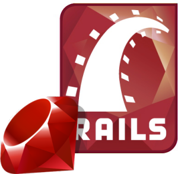

Minicursos
As inscrições iniciarão no dia 23 de maio de 2017.


Atenção, a quantidade de vagas por minicurso é limitada a 20, então corra e faça sua inscrição!
Arduino para Iniciantes
Conceitos básicos sobre Arduino, sensores, atuadores e desenvolvimentos de projetos.
por Frank Helbert Borsato
Prof. Dr. Frank Helbert Borsato
Graduado em Ciência da Computação (UEM)
Mestre em Ciência da Computação (UEM)
Doutor em Ciências - Ciência da Computação (USP)
Professor de Lógica Matemática, Arquitetura e Organização de Computadores e Sistemas Operacionais.
Graduado em Ciência da Computação (UEM)
Mestre em Ciência da Computação (UEM)
Doutor em Ciências - Ciência da Computação (USP)
Professor de Lógica Matemática, Arquitetura e Organização de Computadores e Sistemas Operacionais.
por Radames Juliano Halmeman
Prof. Dr. Radames Juliano Halmeman
Graduado em Processamento de dados (UEM)
Mestrado em Informática (UFPR)
Doutorado em Energia na Agricultura - Agronomia (Unesp)
Professor de linguagens de programação (Java) e Computação Física.
Graduado em Processamento de dados (UEM)
Mestrado em Informática (UFPR)
Doutorado em Energia na Agricultura - Agronomia (Unesp)
Professor de linguagens de programação (Java) e Computação Física.
Introdução à Computação Paralela em Sistemas Heterogêneos: Programação para GPUs com a Plataforma CUDA
O objetivo desse minicurso é apresentar uma introdução à Computação Paralela com Sistemas Heterogêneos. A utilização de placas gráficas (GPUs) como dispositivos aceleradores de execução. Serão apresentados o modelo de programação e de memória, o modelo execução de aplicações utilizando GPUs, criação e lançamento da execução de kernels em GPUs. A ideia é que seja um minicurso bem prático e que os participantes possam sair como uma visão geral sobre o assunto.
por Rogério Aparecido Gonçalves
Professor na Universidade Tecnológica Federal do Paraná (UTFPR), campus Campo Mourão desde 2009. É Bacharel em Informática (2006) e Mestre em Ciência da Computação (2008) pela Universidade Estadual de Maringá (UEM). Tem Doutorado em Ciência da Computação (2016) pela Universidade de São Paulo (USP) na área de Computação Paralela. Tem experiência em Ciência da Computação, tendo como principais linhas de pesquisa e interesses: Arquitetura de Computadores, Computação Paralela, Computação Heterogênea e Offloading de Código.
Use Emacs! VI é mau
Utilizado por grandes nomes como Linus, Stallman, Matz e muitos outros, venha e aprenda a utilizar um dos editores de texto mais debatidos de todos os tempos e a estimular o seu dedo mínimo.
por Vitório Miguel
Estudante de Ciência da Computação.
Aplicações Web com Flask
Flask é um microframework Python, ideal para construir aplicações web sem complicações. Neste minicurso além de uma introdução ao Flask e suas dependências, serão construídas 3 aplicações web: Uma aplicação que busca informações públicas do Github, uma simples API e um Microblogging.
por Bruno Mendes
Estudante do curso de Bacharelado em Ciência da Computação na UTFPR-CM. Contribuidor casual de software livre. Adepto de tecnologias que poupam tempo do desenvolvedor e atualmente trabalhando na área de gamificação.
Desenvolvimento de Aplicativos Móveis Híbridos Multi-plataformas
O desenvolvimento de aplicativos móveis não é novidade e está bem difundido no contexto da tecnologia da informação, o desafio do momento é como desenvolver aplicativos móveis para diferentes plataformas de forma rápida e eficiente. Este minicurso tem como objetivo fazer uma introdução e praticar as tecnologias necessárias para o desenvolvimento de aplicativos para diferentes plataformas, como Android e iOS, utilizando HTML, CSS e JavaScript.
por Fábio Rogério SJ
Fábio Rogério da Silva José, conhecido como Fábio Rogério SJ nas redes sociais, é desenvolvedor de aplicações web e mobile desde quando o Internet Explorer 7 era um pesadelo e desenvolver aplicativos híbridos com tecnologias web era um trabalho árduo, ou seja, desde 2007. Atualmente Fábio Rogério trabalha como desenvolvedor e pesquisador na empresa TecnoSpeed e presta serviço de consultoria e treinamento em desenvolvimento de aplicações web e mobile utilizando tecnologias híbridas. Fábio também é professor, de curso superior, onde ministra as disciplinas de desenvolvimento frontend, desenvolvimento de aplicativos móveis, web design, design de interação e lógica de programação.
Introdução ao LaTex
O Latex é um sistema para elaboração de documentos de alta qualidade tipográfica. Possibilita o processamento avançado de texto e a formatação segundo uma estrutura bem definida. Por isso, é muito utilizado para a elaboração de documentos que exigem rigor na formatação, como livros, artigos e monografias. Neste curso será apresentada uma visão geral sobre o sistemas Latex, de suas principais ferramentas e da manipulação básica de documentos, como estruturação e formatação de textos, figuras, tabelas e fórmulas matemáticas.
por Rodrigo Campiolo
Possui graduação em Ciência da Computação pela Universidade Estadual de Maringá (2002), mestrado em Ciência da Computação pela Universidade Federal de Santa Catarina (2005) e doutorado em Ciência da Computação pela Universidade de São Paulo (2016). Atua como professor em cursos na área de Informática desde 2005. Já ministrou curso de Latex em 2010 na Universidade de Rio Verde-GO .
Introdução ao Linux
Curso focado para iniciantes em computação, onde será ensinado conceitos do Sistema Operacional Linux, bem como conceito de interfaces gráficas, terminal, principais comandos do terminal e criação de scripts em Shell.
por João Martins
Estudante de Bacharelado em Ciência da Computação UTFPR - CM. Estudioso de linguagens de programação e Software Livre e atualmente trabalhando com Programação Paralela em dispositivos aceleradores (GPUs).
por Luiz Arthur
Professor da UTFPR com doutorado em Ciência da Computação e certificado LPI (Linux Professional Institute).
Minerando Repositórios de Código
Mineração de Repositórios de Software é uma área voltada para análise dos dados que são gerados durante o desenvolvimento de software. Esses dados podem ser transformados em informações úteis para ajudar desenvolvedores a tomarem decisões no dia a dia. Neste minicurso, utilizaremos o RepoDriller, um Framework Java que auxilia a analise de repositórios e também o GHTorrent, um serviço que fornece os dados da API do Github de forma offline. Dada a simplicidade do RepoDriller, com poucas linhas de código será possível extrair e analisar uma grande quantidade informações de um repositório. Requisitos: Esse minicurso tem atividades práticas. Se decidir usar seu próprio notebook será necessário ter Eclipse ou Netbeans instalado.
por Mairieli Wessel
Estudante do curso de Bacharelado em Ciência da Computação na UTFPR-CM. Apaixonada por Engenharia de Software e atualmente trabalhando na área de recomendação de mudanças.
Introdução ao desenvolvimento de aplicações full-stack com JavaScript
De carrasco à uma das linguagens mais aclamadas da atualidade, descubra porque você deve considerar o JavaScript para o desenvolvimento do seu próximo projeto. Do back-end em Node.js, ao front-end com React.js e mobile com React Native, aprenda a criar soluções completas e robustas com JavaScript.
por Douglas Nassif
Desenvolvedor full-stack, apaixonado por tecnologia e viciado em GitHub, considera o processo de criação de software uma das atividades mais importantes já existente.
por Edvaldo Szymonek
desenvolvedor full-stack, utiliza JavaScript e suas tecnologias, trabalha atualmente com NodeJS no back-end, React e React Native no front-end. Formado em Análise e Desenvolvimento de Sistema, sempre antenado em novas tecnologias, contribui sempre que pode com a comunidade open source e ama sorvete :)
Programação de Jogos com JavaScript
Apresentando uma introdução ao desenvolvimento de jogos por meio da construção de um jogo simples utilizando o framework Phaser.
por Marcos Silvano
Professor da UTFPR com doutorado em Ciência da Computação. Possui experiência e atua principalmente nos seguintes temas: Aplicativos Móveis, Engenharia de Software e Desenvolvimento de Jogos.

Introdução ao de desenvolvimento de aplicações web com Ruby on Rails
Nesse curso vamos ter uma visão geral da linguagem Ruby e do framework web Ruby on Rails. Você irá criar a sua aplicação e durante o processo aprender o fundamental da linguagem Ruby e também sobre as facilidades e peculiaridades do fluxo de trabalho com Rails. Veremos também como criar testes e como integrar gems (bibliotecas) da comunidade no seu projeto em Rails!
por Henrique Pinheiro
Henrique Sousa Pinheiro, estuda Ciências da Computação na UTFPR-CM.
Análise de Vulnerabilidades Web.
Apresentação das principais vulnerabildiades Web, bem como a exploração de cada vulnerabilidade, com exercícios práticos de invasão a servidores Web utilizando vulnerabilidades apresentadas e existentes em aplicações exemplo.
por Wagner Aparecido Monteverde
Mestrando em Informática na UTFPR Cornélio Procópio, Gerente de projetos no Grupo de trabalho Early Warning System da Rede Nacional de Pesquisa - RNP, Gerente de Projetos do Grupo de trabalho Big Data Intelligence Security da Rede Nacional de Pesquisa - RNP. Líder da Startup de Segurança Cybersecurity++.